K-Day 001｜出發
究竟和以往看到的京都有什麼不同呢？從昨晚思考到現在。
京都天空的藍色和東京的不同，東京是清晨的青色，背後是白色的；京都的藍色背後有一層紫色，從邊緣透露出一點點。
建築和路上的交通工具也是一樣。背後總是多了一層顏色。
藍色時間既不是早上，也不是清晨、黃昏或晚上。若是在這個時間行走於某個城市，也許就會喜歡上它。
京都有一種原來分屬內外的繁華人間與另一個世界重疊在同一面玻璃上的感覺。
這種異樣感在芥川龍之介對京都的描寫中曾經見過，實際造訪後，確實每次都有這樣的體悟。
想著想著天就亮了。
八點起床收拾行李。今天的早餐是昨天沒吃完的三明治。為了健康買的蔬菜口味，結果完全不想吃。
今天天氣大好。走路去EIRIN取車。
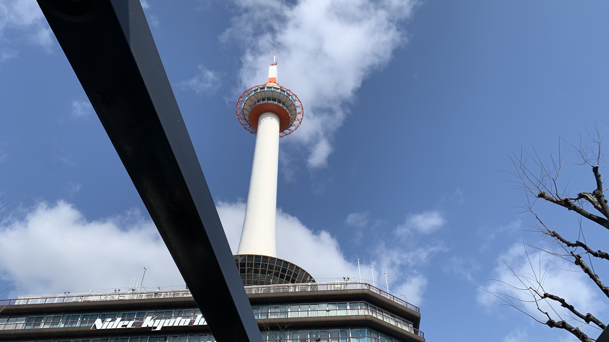
連車站都覺得萬分漂亮，究竟是為什麼呢？
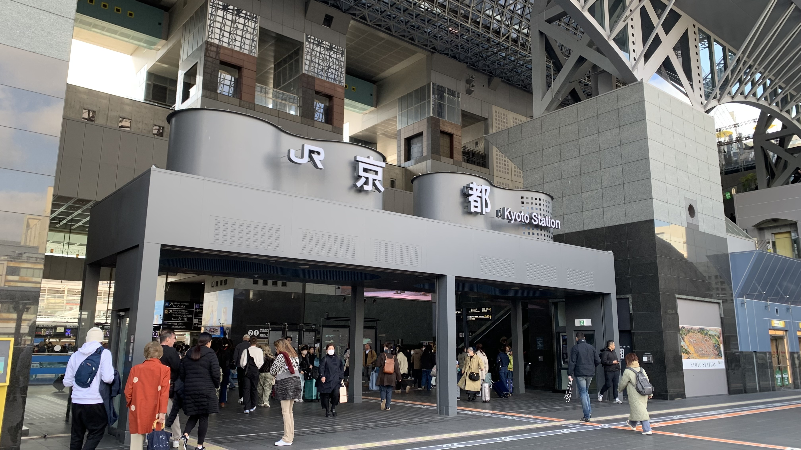
嘿嘿！第二十三號！
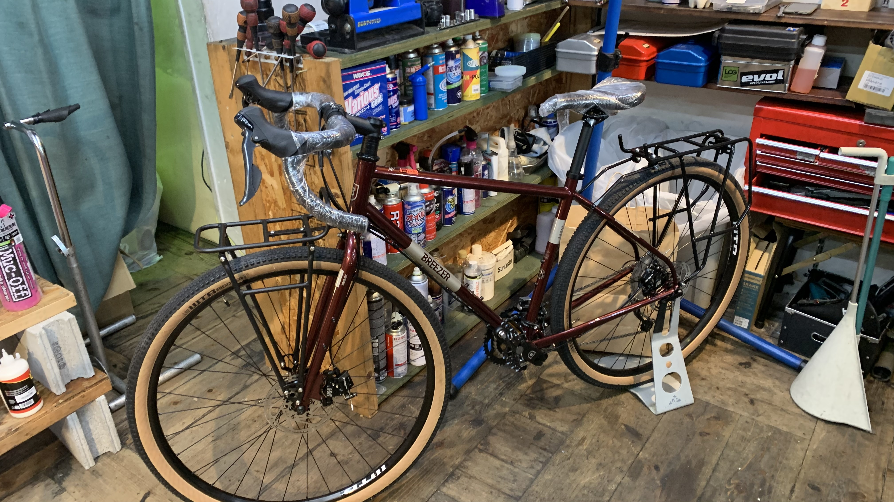
取車後問了店員附近有沒有好喝的咖啡，按照他的指示往前騎一小段路後……就迷路了。
在車站旁經過一家小店，買了一杯760元的抹茶拿鐵。很普，所以隨便照了一張。真的不能再這樣了。
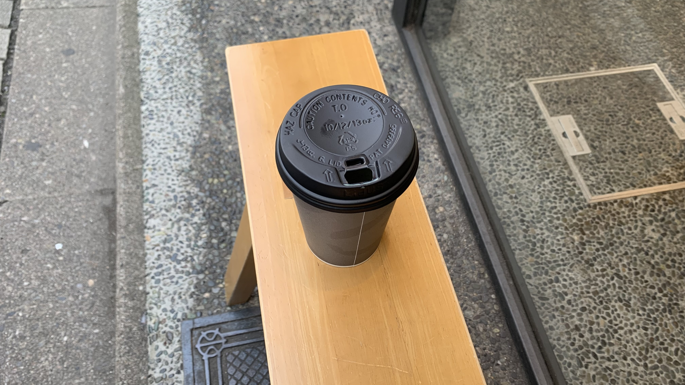
終於再次出發。
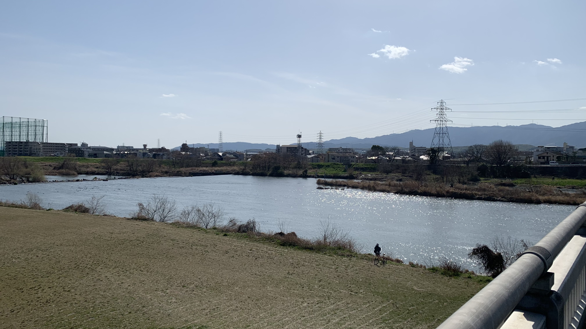
這裡是桂川，風景很好，但是這麼早就休息有點過分，只好繼續往前騎。
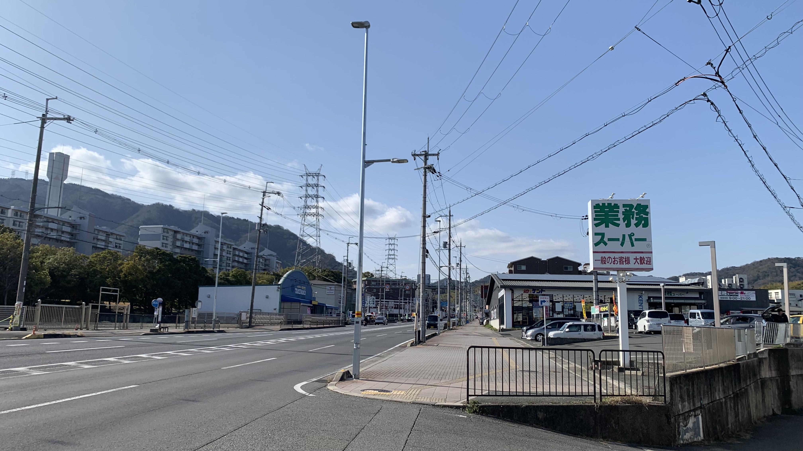
國道九號上，這是第一家業務超市，聽說很便宜，於是進去逛逛。
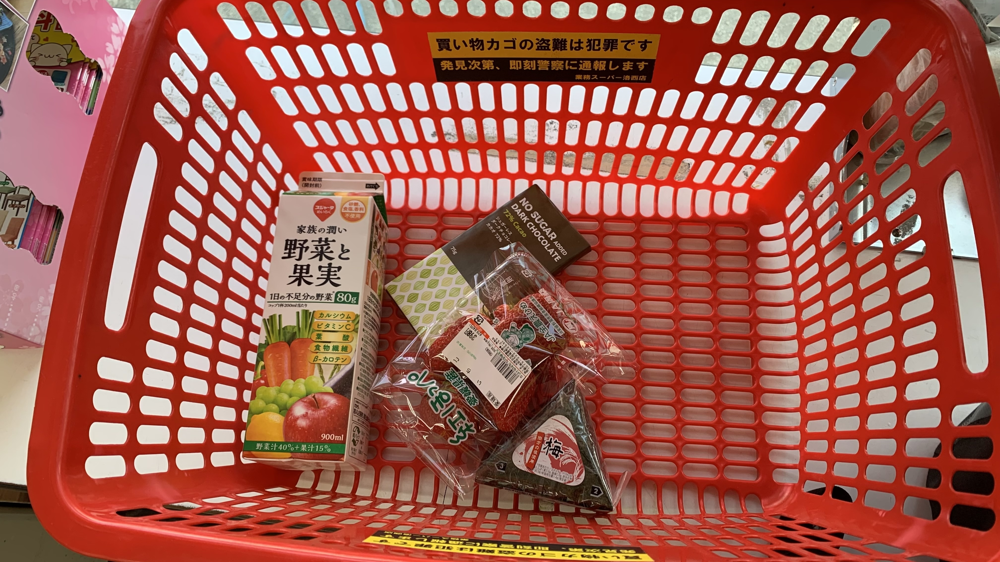
買了這些，當作今天的晚餐。總共1006元。
前往龜岡的路上，本來一直騎著國道九號，導航顯示旁邊有條小路，雖是靈園，但有捷徑當然要走。
用半個小時的時間拖著35公斤的家當爬了半小時的山坡。雙腳發軟坐在路邊吃起草莓。
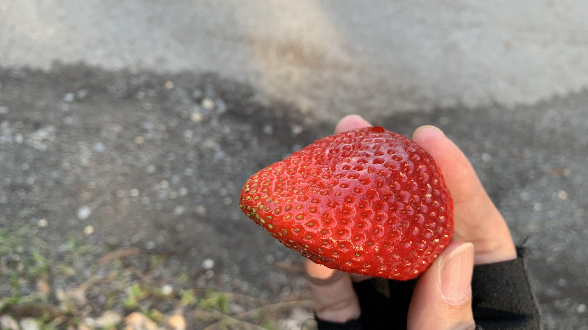
愛媛縣的草莓十分美味。希望之後兩週還能買到。
吃飽後繼續推車。地圖顯示就快出叉路了。

結果如圖所示。捷徑不屬於我。
就當作京都靈園一日遊，往下一路滑到門口。
默默往京都的反方向爬坡。推車。爬坡。推車。
五點半左右抵達今天的目的地—亀岡休息站。
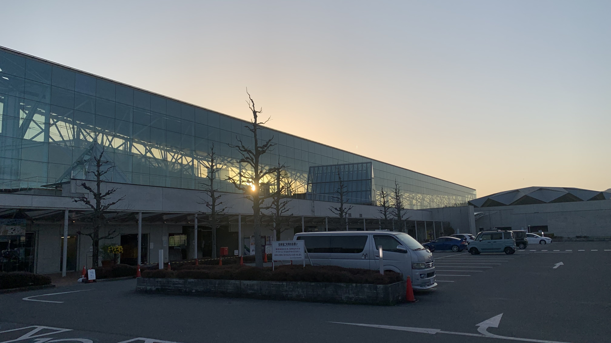
很巨大的建築，但是今天沒有營業。
下面就是休息室了。只開放到晚上九點，九點後要去哪兒呢。
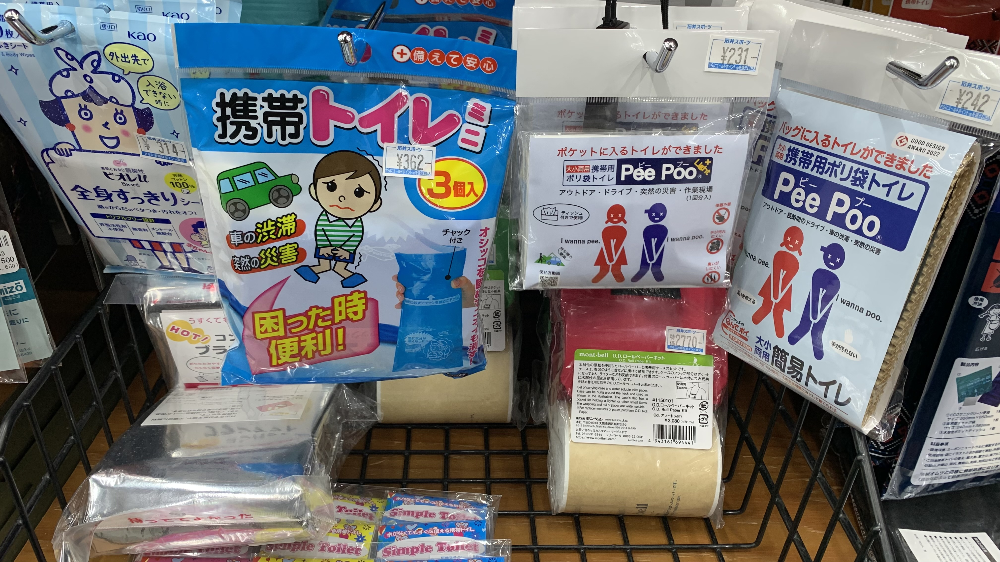
發現攜帶廁所。
這東西真的很重要。畢竟是乾淨的國家，在日本隨地大小便會受到良心的譴責。
小刀收在櫃子裡，跟店員說要哪一款，他會打開櫃門在盒子上面貼號碼牌，結帳時拿著相同的號碼牌到收銀台領刀。
因為我說要買單了，他就帶著刀陪我走到櫃檯交給收銀員打包。全程是拿不到刀子的，這服務相當安心。
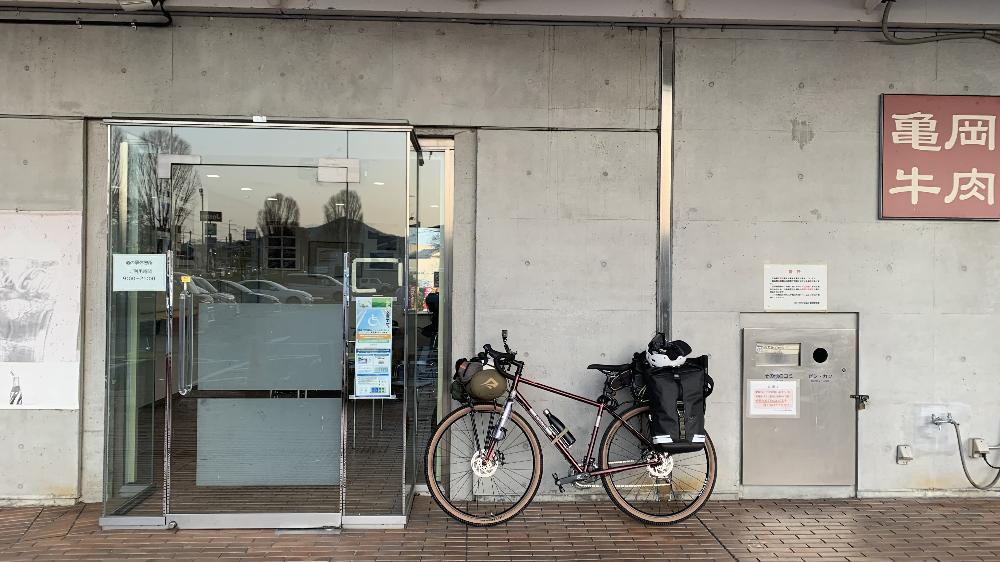
發個呆突然天就黑了。
戴上頭燈把前面的兩個水瓶移到中間，雖然安裝在前叉看來很帥，但騎車轉彎時會撞到膝蓋。
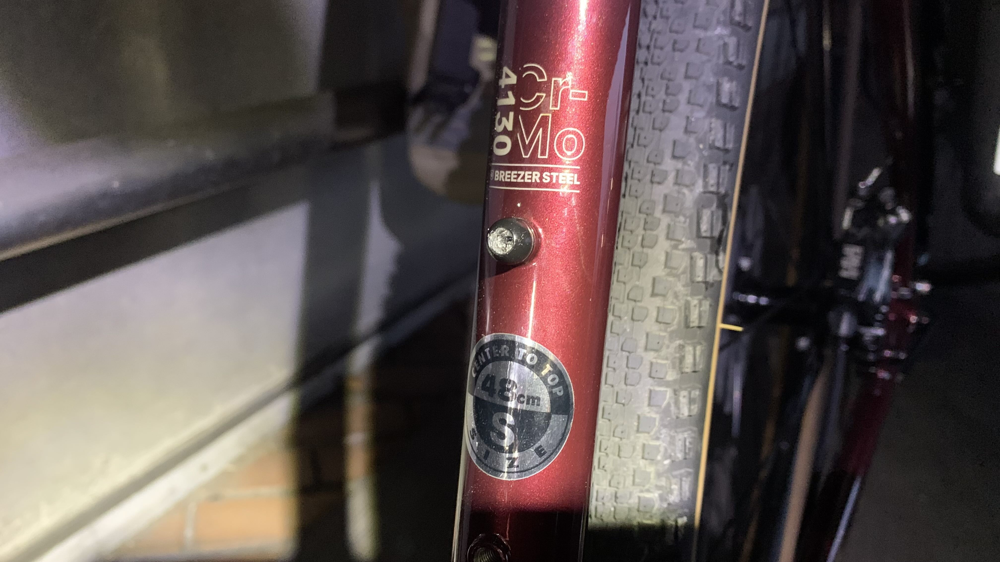
然後螺絲就崩了。
附近的自行車店都有些距離，決定先牽車到休息室避風。
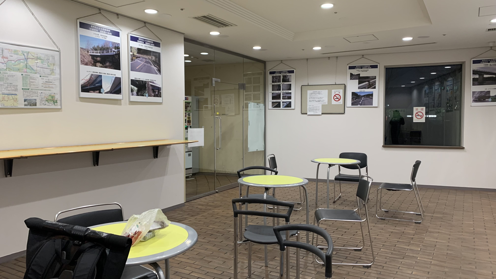
此刻體感溫度三度。待在休息室還是冷到發抖。
暖暖包在行李深處，要拿出來也有點麻煩。
晚上七點半了。此刻的我坐在溫熱的馬桶上思考人生的下一步。今晚能不能睡在裡面呢⋯⋯
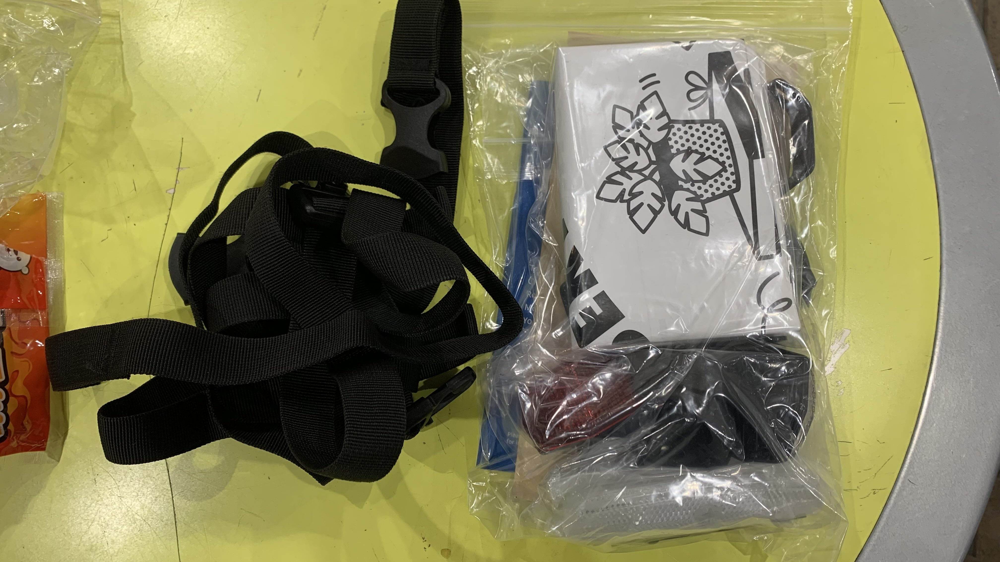
趁著休息室關閉前整理了一下行李。
才發現早上牽車時拿的一大包東西，裡面有一本說明書、取車收據、車輛維修說明、前貨架的額外金屬零件、一張前面是海報的說明書、各式反光片、扣環……早上收下時太興奮，完全沒有體會到手中的重量，究竟為什麼帶著這些爬山呢？
總之先回到自行車停車場睡覺。
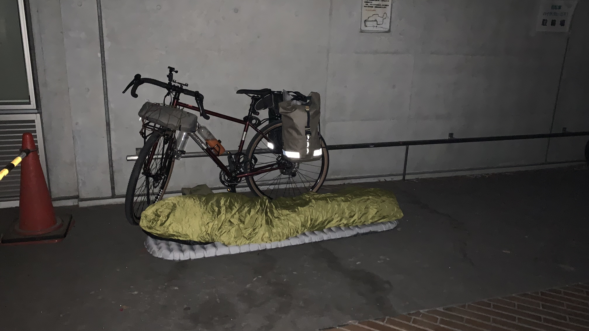
睡在員工出入口，不時有巡邏人員經過，謝謝他們沒有把我趕走。
今天龜岡的氣溫是2-11度，早上還維持晴天，11點後就開始轉陰，5點應該會下雨。想到出門前陪奶奶吃晚飯，當時她突然抬頭望向窗外，說了一句：「要下雨了」 隔天下了一整天雨。
這就是迂腐的讀書人一直假意追求的自然嗎？雖然這麼想著，但是把我的身體用空間與世界隔開的並不是我自己。
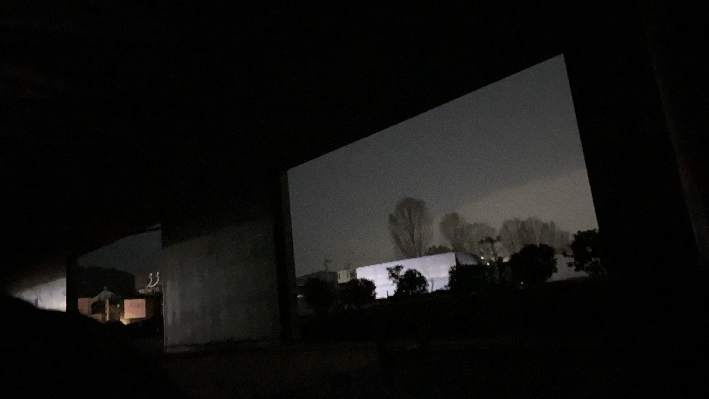
凌晨三點半躺在自行車停車場的地上，也許是肚子餓了，突然想起這些。
今日花費： 很普的抹茶拿鐵 790、晚餐 1006、販賣機瓶裝水 140